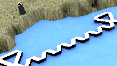

If we want to rebuild islands or coastal land currently sinking/degrading due to global warming/sea-level rise/erosion etc, what would be the best way to do it, i.e. the easiest/cheapest/most reliable approach? Using reinforced concrete/steel/landfill and similar heavy engineering wouldn't conform to any of the ease/cheapness/reliability criteria (no, not even reliability - consider what happens to most sea 'defences' over time, even the heaviest). If we are to start by disallowing standard construction, what are we left with? .. well, here is one approach, starting with a
 This is an extension of floating marinas and similar structures. The simple idea on which the whole reef is based is large bouyant modules or spars consisting of a foam body with a tough external wrap, manufactured at low cost largely from recycled waste. The reef uses structures in the form of triangles and chains which are designed to resist deformation, made from two types of spar; these structures also have a basic elastic character, reinforced by liberal use of old tyres and other energy absorbers, which enables them to deflect and absorb wave and storm action, and have sea anchors to improve stability and provide inertial damping to enhance wave resistence. The artificial reef is designed to be like a salt marsh or mangrove forest, reducing the force of tides and storms without sustaining significant damage itself - though its cheap components and modular design mean that repairs are not as expensive as those for more monolithic structures. A natural extension of these structures is
These are based on the same idea of rugged permanently bouyant structures, but with a larger range of modules corresponding to the increased range of activities. Islands could be constructed for many purposes, some more specialised than others: floating solar arrays; crop plantations; desalination plants for desert coasts or coastal cities; chemical plants for extracting materials from sea-water; luxury hotels .. and so on.
The islands described here will provide new habitation areas to replace sinking/flooding land, for both islands and coastal areas, and also utilise waste materials by reconstituting them as bouyancy foam or composites, as well as absorbing a large amount of carbon dioxide by increasing the biological productivity of the stretches of coast or open ocean they're placed on.
Though the proposed design is fairly general-purpose it is aimed at providing harbour facilities near a coastal population, so it is assumed that large numbers of boats will use the island and the islanders will use boats as their major form of transport. It is also designed to enable resident islanders to be largely self-sufficient for food and water, so the island has agricultural and aquacultural areas with associated food processing, and solar desalination and rainwater capture.
Building such an island, in effect, converts waste to land!